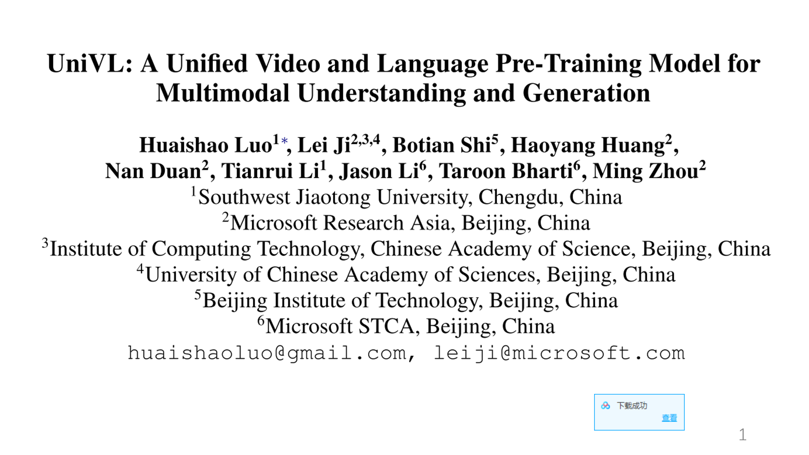

Speaker:Wenxue Shen [
PPT
&
Video(password: 1234)]
Topic:Video and Language Pre-Training for Multimodal Understanding and Generation
Date:May 14, 2021
Abstract: This paper proposes UniVL: a Unified Video and Language pre-training model for both multi-modal understanding and generation. Experimental results demonstrate that the UniVL can learn strong video-text representation and achieves state-of-the-art results on five downstream tasks.Moreover,It is worth studying an end to end training from raw videos instead of extracted fixed video features with considering the time and memory cost.So another paper propose a generic framework CLIPBERT that enables affordable end-to-end learning for video-and-language tasks, by employing sparse sampling.